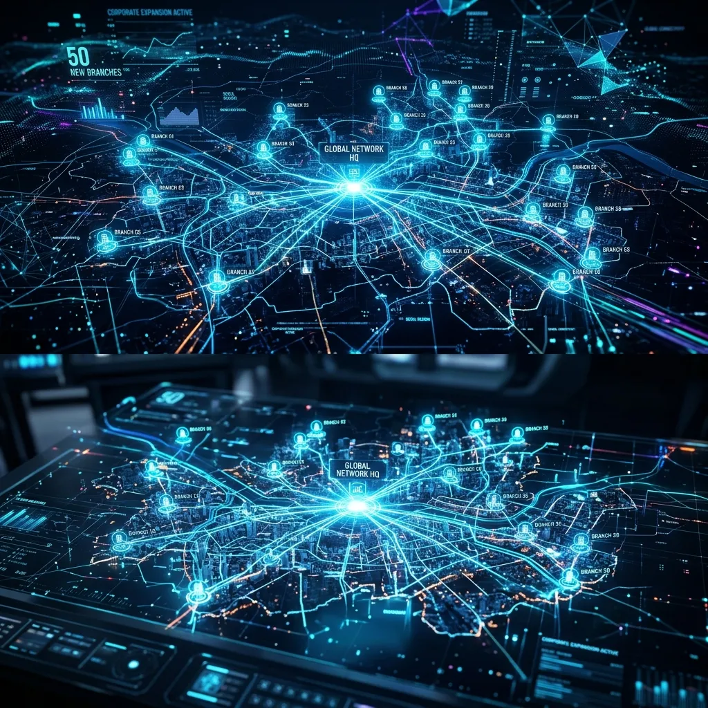
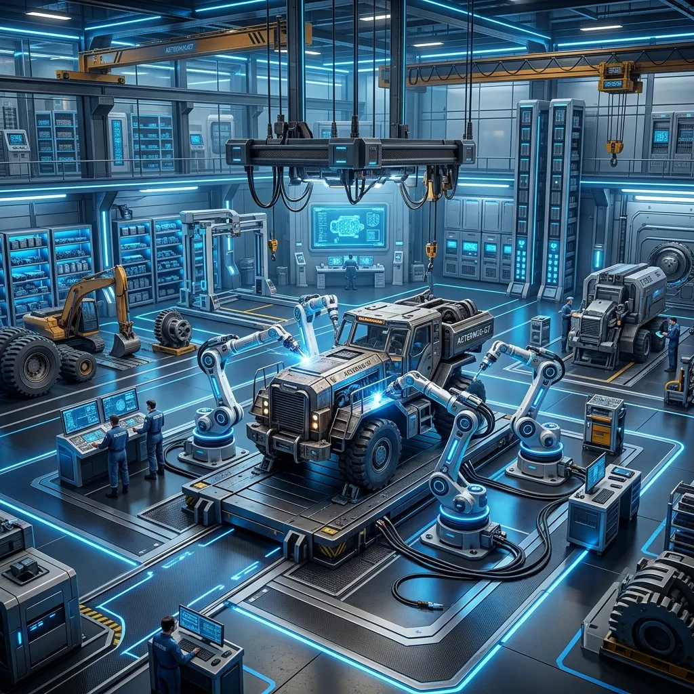
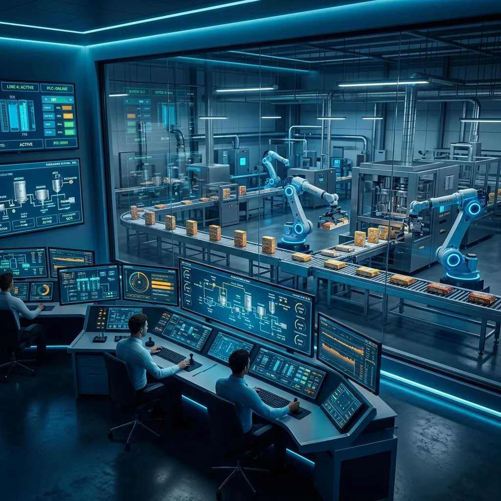
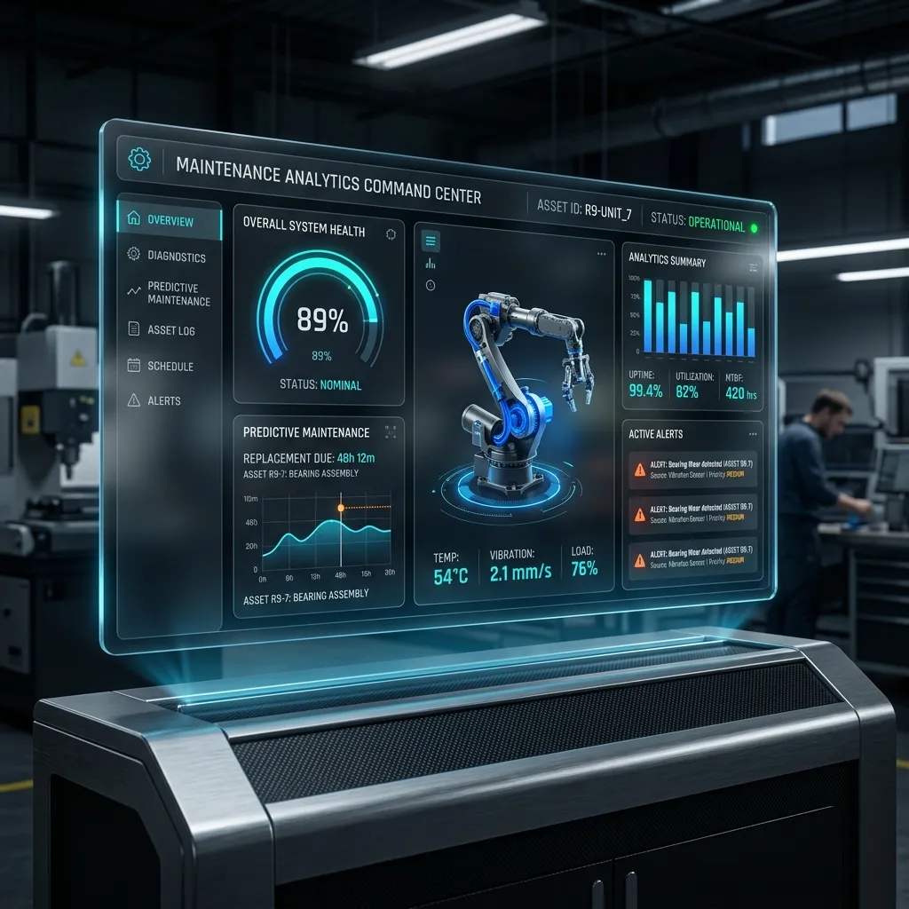
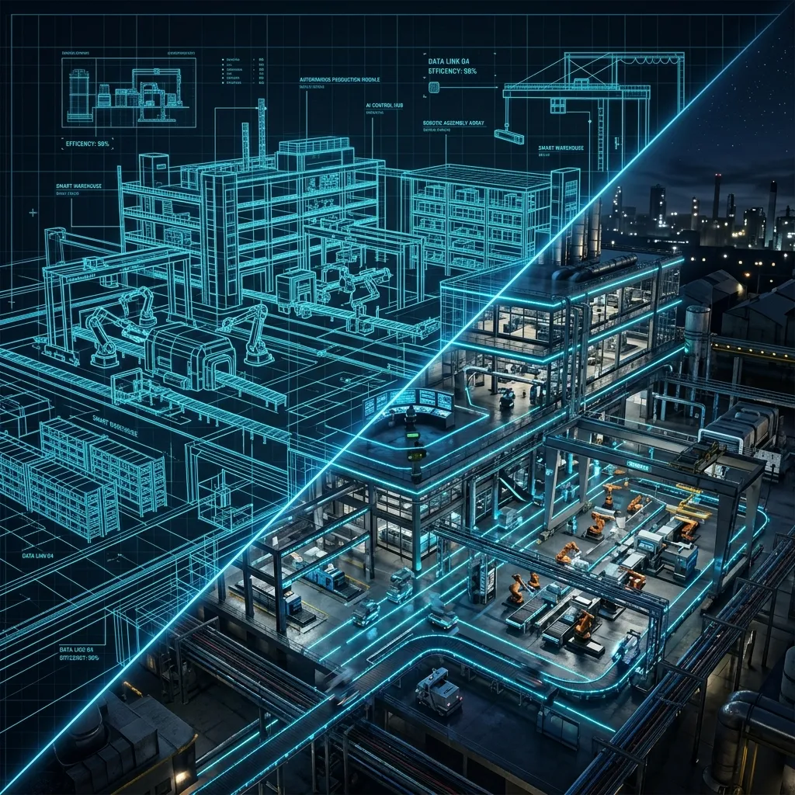
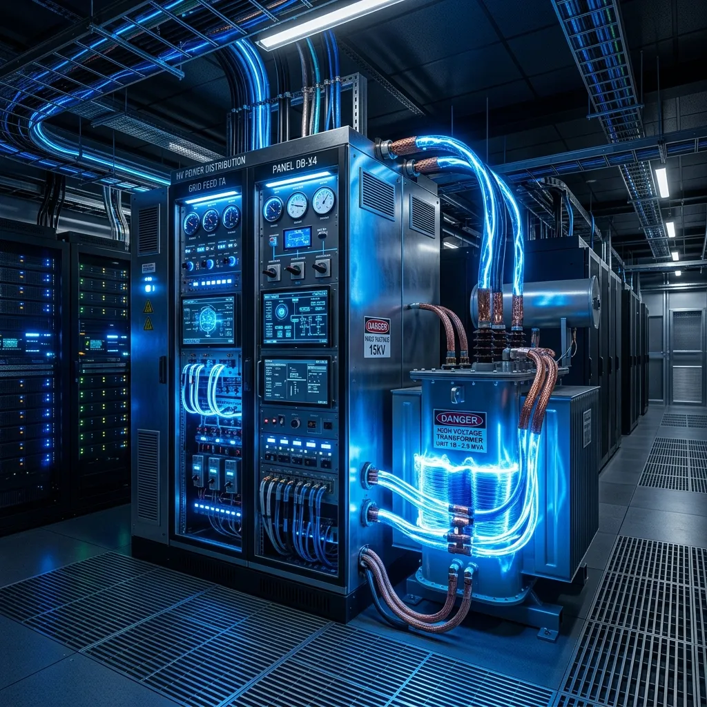

50+ Branches Mega-Expansion
Managed the opening of 50+ new branches across the country for 5 major brands (B.Laban, Wahmy Burger, Am Shalaby, Baheeg, Konafa & Basbousa).
- Delivered projects at 35% less cost than contractor estimates.
- Managed the full project lifecycle from site technical evaluation to final handover.
- Standardized technical specs and reference pricing across multiple contractors, significantly reducing discrepancies.

Central Maintenance & Rehab Hub
Established a central warehouse and maintenance workshop strategy to optimize asset lifecycle.
- Recovered and rehabilitated broken equipment from various branches.
- Reintroduced refurbished equipment into new branches, dramatically saving the capital budget (CapEx) for new equipment purchases.

Full Production Line Automation
Led the complete digital and automation transformation of confectionery production lines at El Abd Foods.
- Designed, manufactured, and wired PLC/HMI/SCADA control systems.
- Transitioned operations from manual methods to fully automated systems, which are still running efficiently today.

Nationwide CMMS Implementation
Designed and deployed a custom Computerized Maintenance Management System (CMMS) from scratch across a massive national real-estate portfolio.
- Digitized the entire asset lifecycle, work order routing, and inventory tracking.
- Successfully shifted the organizational strategy from reactive to preventative/predictive maintenance.
- Contributed to slashing the maintenance operational expenditure (OpEx) by more than 33%.

Greenfield Projects & Cold Chain
Led multiple greenfield factory launches and restructured temperature-critical facilities.
- Delivered complete facilities from bare-bone structures to fully operational states, overseeing MEP and machinery.
- Restructured a highly critical factory dependent on continuous cold chain management, upgrading HVAC and insulation infrastructure.

Power Distribution Infrastructure
Managed the central power distribution networks for major manufacturing hubs.
- Supervised Transformers, Main Distribution Boards, and Motor Control Centers (MCC) for 24/7 continuous operations.
- Acted as the sole owner representative and technical reviewer for all electrical and MEP designs in new constructions.